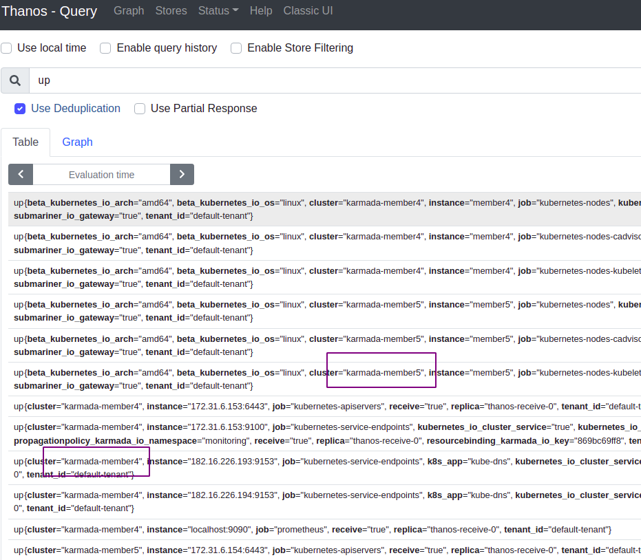

Karmada 有趣的玩法：多集群监控
云原生时代， Kubernetes 多集群架构成为了一个大的方向，在多集群管理、网络、监控等领域都有多种解决方案。在监控方面，由于 Prometheus 的局限性，Thanos 成为了 Kubernetes 多集群监控的解决方案之一，就像 karmada 提供多集群的控制面一样，Thanos 也提供了多集群监控的全局视图。 接下来笔者结合我们线上的多集群监控方案，通过部署 Thanos 监控多集群的例子，来看看 karmada 在多集群应用场景下，除了有哪些调度的特性外，还提供了什么能力。
Thanos 方案选择
熟悉 Thanos 的读者都知道 Thanos 有两种与 Prometheus 集成的方案，一种是 Thanos 作为 Sidecar 与 Prometheus 运行在同一组 Pod 内，另一种则是 Receiver ，Prometheus 通过 Remote Write 把数据存储到 Thanos。
笔者选择了后者，在大规模集群和多集群应用场景下，Sidecar 方案感觉没 Receiver 方便好用。(当然，笔者也没有数据支撑这一说法，大家可以选择适合自己的方案。)
方案设计
- Prometheus：采集监控指标数据；
- Thanos Store：存储 Prometheus 数据；
- Thanos Query：提供全局查询视图；
- Thanos Rule：告警规则；
- Alertmanager：推送告警;
注
这个方案需要打通两个集群的容器网络，社区也有很多解决方案。karmada 也提供了 submariner 解决方案的教程。不过文档似乎有些过时了，submariner 的gateway 使用了 nodeSelector ，所以还需要给节点打上标签。感兴趣的读者可以提交一个 PR 来更新它 :） kubectl label node {NodeName} submariner.io/gateway=true 如果是混合环境，也可以把 Prometheus 的数据写入到远端的 Thanos。 Thanos 也支持 Grafana，文章中没有部署而已。
部署 Thanos
完整的 yaml 的文件，请看文章后面的链接。
创建命名空间
在 karmada 控制面创建命名空间，namespace 控制器会把命名空间同步到成员集群。
kubectl create ns monitoring
部署 Thanos Receive
这里部署了一个 pod，部署多个 pod 在 endpoints 增加即可。
# cat thanos-receive-config.yaml
---
apiVersion: v1
kind: ConfigMap
metadata:
name: hashring
namespace: monitoring
data:
hashrings.json: |-
[
{
"endpoints":
[
"thanos-receive-0.thanos-receive.monitoring.svc.cluster.local:10901"
],
"hashring":
"default",
"tenants":
[ ]
}
]
---
部署 Thanos Receive ，并传播到成员集群。
kubectl create -f thanos-receive-sa.yaml
kubectl create -f thanos-receive-svc.yaml
kubectl create -f thanos-receive-config.yaml
kubectl create -f thanos-receive-sts.yaml
# PropagationPolicy 传播策略，笔者这里的成员集群是 member4 member5
kubectl create -f thanos-receive-pp.yaml
部署 Prometheus
因为有多个 Prometheus 向 Thanos 写入数据，为了区分不同的数据源，所以我们需要在 Prometheus 加上一个标识来区分是哪个集群或分区的数据。
Prometheus 开启 expand-external-labels 特性
- --enable-feature=expand-external-labels
配置文件增加 label 配置，从环境变量取值。
prometheus-kubernetes.yml: |
global:
scrape_interval: 15s
evaluation_interval: 15s
external_labels:
cluster: karmada-${CLUSTER_NAME}
由于这个 label 是唯一标识，所以我们使用 karmada 的 OverridePolicy 来修改调度之后的结果，不同的成员集群增加不同的环境变量。
---
apiVersion: policy.karmada.io/v1alpha1
kind: OverridePolicy
metadata:
name: prometheus-member5
namespace: monitoring
spec:
resourceSelectors:
- apiVersion: apps/v1
kind: StatefulSet
name: prometheus
targetCluster:
clusterNames:
- member5
overriders:
plaintext:
- path: "/spec/template/spec/containers/0/env"
operator: add
value: [{"name":"CLUSTER_NAME","value":"member5"}]
部署 Prometheus ，并传播到成员集群。
kubectl create -f prometheus-svc.yaml
kubectl create -f prometheus-config.yaml
kubectl create -f prometheus-rbac.yaml
kubectl create -f prometheus-sts.yaml
# PropagationPolicy 命名空间级资源传播策略
kubectl create -f prometheus-pp.yaml
# ClusterPropagationPolicy 集群级资源传播策略
kubectl create -f prometheus-rbac-pp.yaml
# OverridePolicy 修改调度结果策略
kubectl create -f prometheus-op.yaml
部署 node-exporter
现在我们来部署 node-exporter，后面做测试。
kubectl create -f node-exporter.yaml
kubectl create -f node-exporter-pp.yaml
部署 Alertmanager
Alertmanager 把告警短信推送到微信，这个微信的配置。
receivers:
- name: "itesttech"
wechat_configs:
- send_resolved: true
to_user: ""
to_party: "${TO_PARTY}"
to_tag: ""
agent_id: "${AGENT_ID}"
corp_id: "${CORP_ID}"
api_secret: "${API_SECRET}"
部署 Alertmanager ，并传播到 member5。
kubectl create -f alertmanager.yaml
# 传播到 member5
kubectl create -f alertmanager-pp.yaml
部署 Thanos Query
thanos query 通过关联多个 Thanos Store 实例，提供多集群的全局视图。karmada 的服务导出导入的特性也可以解决 thanos query 跨集群查询问题。
笔者这里是把 thanos query 部署到 member5，所以需要把 member4 的 Thanos Receive 服务导出，并在 member5 导入。
---
apiVersion: policy.karmada.io/v1alpha1
kind: PropagationPolicy
metadata:
name: service-export-member4
namespace: monitoring
spec:
resourceSelectors:
- apiVersion: v1
kind: Service
name: thanos-service
- apiVersion: multicluster.x-k8s.io/v1alpha1
kind: ServiceExport
name: thanos-service
placement:
clusterAffinity:
clusterNames:
- member4
---
apiVersion: multicluster.x-k8s.io/v1alpha1
kind: ServiceImport
metadata:
name: thanos-service
spec:
type: ClusterSetIP
ports:
- port: 10901
protocol: TCP
---
apiVersion: policy.karmada.io/v1alpha1
kind: PropagationPolicy
metadata:
name: service-import-member5
spec:
resourceSelectors:
- apiVersion: multicluster.x-k8s.io/v1alpha1
kind: ServiceImport
name: thanos-service
placement:
clusterAffinity:
clusterNames:
- member5
创建并传播 Thanos Receive 的导出导入服务.
# 创建 crds 资源对象
kubectl create -f service-import-export-crds.yaml
# 在 member4 导出
kubectl create -f thanos-receive-service-export.yaml
# 在 member5 导入
kubectl create -f thanos-receive-service-import.yaml
执行上面的操作后，在 member5 集群可以看到一个名字为 derived-thanos-service 的派生服务。
现在我们修改 Thanos Query 的配置，除了连接本集群的 Thanos Receive 外，还可以通过派生服务连接 member4 的 Thanos Receive。
- --store=dnssrv+_grpc._tcp.thanos-receive
- --store=derived-thanos-service:10901
创建 Thanos Query 并传播到 member5。
kubectl create -f thanos-query.yaml
kubectl create -f thanos-query-pp.yaml
在 member5 执行，把 Thanos Query 的 UI 端口暴露出来。
kubectl -n monitoring port-forward --address 0.0.0.0 thanos-query-cbcc78588-klrdr 8088:9090
浏览器访问 member5 {node ip} 的 8088 端口
通过自定义的 cluster 标签可以区分是哪个集群或分区的数据。 
部署 Thanos Rule
Thanos Rule 从 Thanos Query 查询数据，并把告警推送到 Alertmanager
- --query=dnssrv+_http._tcp.thanos-query.monitoring.svc.cluster.local
- --alertmanagers.url=http://alertmanager.monitoring.svc.cluster.local:9093
我们设置一条规则l来触发告警
data:
rules.yml: |-
groups:
- name: Linux
rules:
- alert: 测试告警-磁盘空间利用率大于30
expr: ceil(((node_filesystem_size_bytes - node_filesystem_avail_bytes) /node_filesystem_size_bytes) * 100) > 30
for: 1m
labels:
severity: 一般告警
annotations:
summary: "文件系统:{{ .Labels.mountpoint }} 使用率过高"
description: "{{$labels.instance}}: 当前文件系统使用率大于30%，使用率为: {{ $value }}"
创建 Thanos Rule 并传播到 member5。
kubectl create -f thanos-rule.yaml
kubectl create -f thanos-rule-pp.yaml
不出意外，我们将在微信看到这样的告警消息。
最后
通过这个例子我们可以看到 Karmada 在多集群应用场景下，除了多集群管理与调度功能之外，还提供了一些特性，比如文章中的集群之间导出和导入服务的功能，还有文章中没有提到的全局 ingress 等功能特性，感兴趣的读者可以去 Karmada 社区查看。
希望这系列文章在各位读者玩转 Karmada 的路上提供些参考或帮助。
文章中的 yaml 文件 https://github.com/prodanlabs/karmada-examples/tree/main/manifests/monitoring
参考： https://github.com/karmada-io/karmada/tree/master/docs